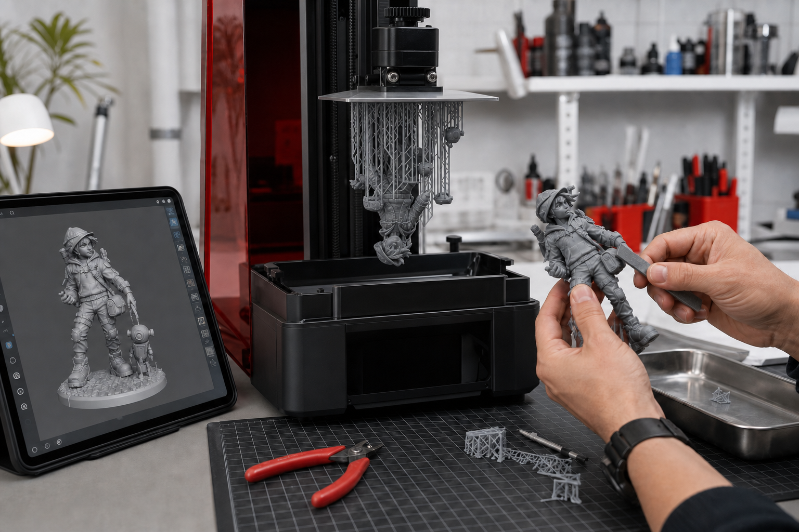

一张角色图进入三维前，要补齐哪些信息
三维生成之前，先把画面里看不见、站不住和做不厚的部分说明白。

先补齐可以判断结构的输入
单张正面角色图可以确定轮廓和主要特征，但侧面厚度、背部结构、配件连接方式和材质通常仍然不清楚。课程会先补充正面、侧面、背面和局部参考，再决定哪些信息可以进入三维。
- 正面图：确认轮廓、表情和主要识别特征
- 侧面与背面：确认厚度、姿态和看不见的连接关系
- 局部图：确认手部、配件、纹理与容易丢失的细节
- 材质参考：区分硬质、柔软、透明或金属表面
四个具体判断决定方案能不能继续
第一看遮挡：被头发、衣服或道具挡住的结构是否需要补画。第二看悬空：细长配件和腾空姿势能否获得支撑。第三看重心：模型放到桌面后是否能稳定站立。第四看厚度：二维图里的线和薄片，进入打印后是否达到可制作尺寸。
两类学员从不同材料进入同一条流程
已有角色或插画的学员，会从现有作品中筛选最适合三维化的一件，并补齐结构资料。只有想法的学员，则从个人故事、关键词、参考图和希望做成的物品开始，先形成边界清楚的视觉输入。两类学员随后都进入三维初模、人工修模、GLB / STL、打印和实体制作。
报名前可以先做一次输入检查
把准备使用的作品图、参考图和希望完成的尺寸放在一起，检查是否能看清正面、侧面、背面、连接方式和主要材质。报名资料会收集你的学习起点、项目目标、设备和经验，课程团队再根据实际情况确认适合的完成等级。


长期招生｜青岛｜3–5 天短训｜评估后预约跟班｜每班最多 10 人。查看当前学习方案与费用
填写报名资料 →